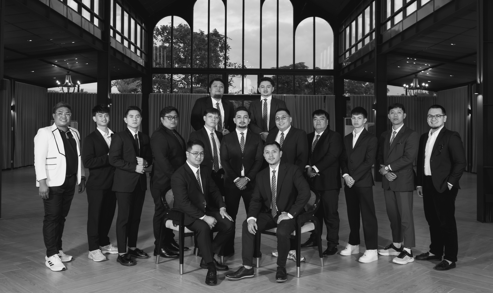
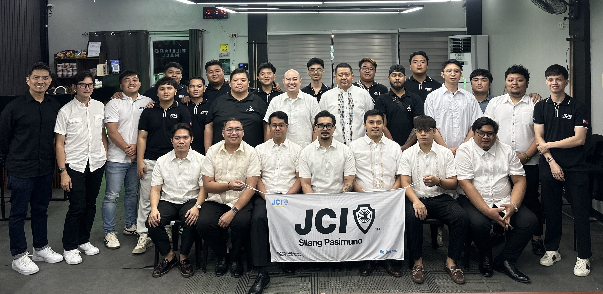
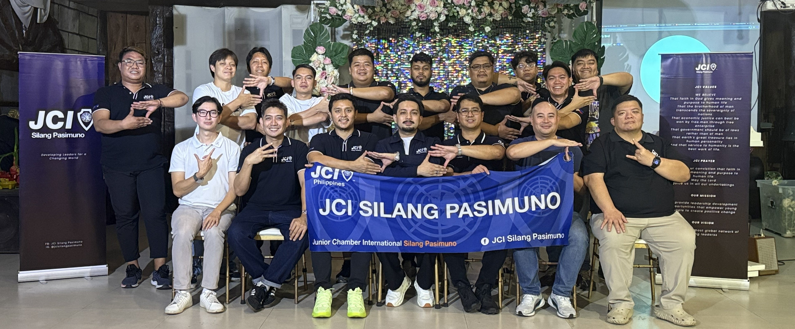
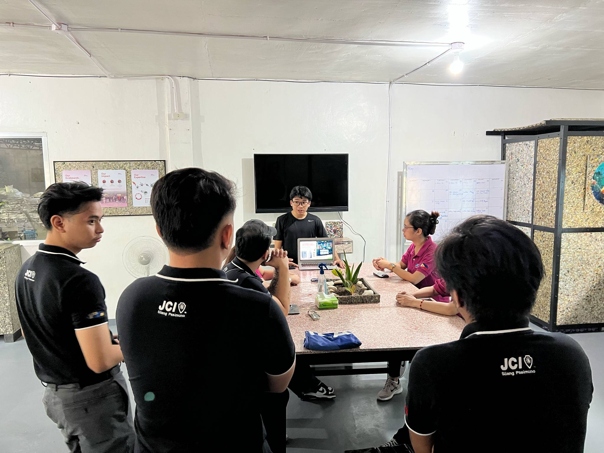
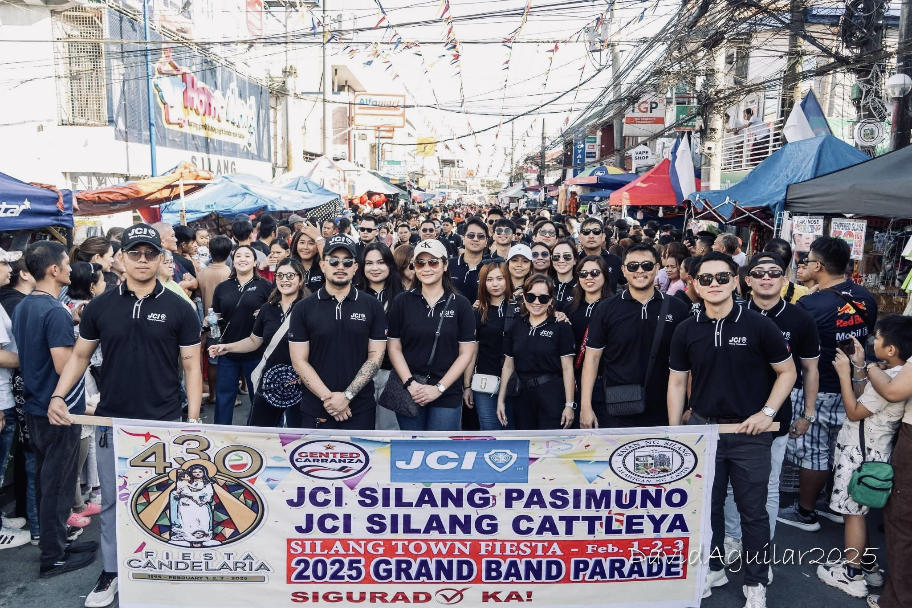
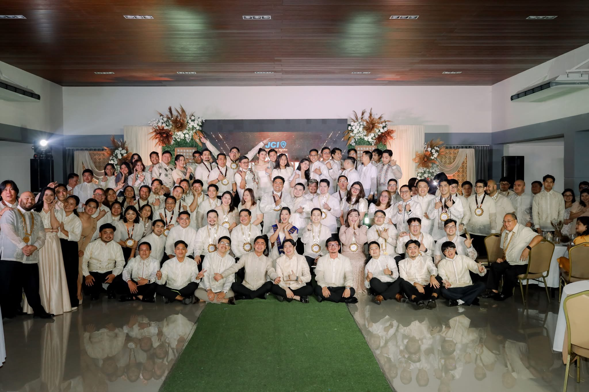

10+
Flagship Projects
500+
Lives Impacted
50+
Active Members
3
National Awards




Leadership Training
Empowering youth with skills for tomorrow

Environmental Action
Tree planting and sustainability efforts

Community Outreach
Delivering aid to families in need
Discover the impact and opportunities that come with being a JCI Silang Pasimuno member
Develop essential leadership skills through training, mentorship, and hands-on project management experience.
Make a real difference in Silang through meaningful projects that address pressing social and environmental issues.
Connect with JCI members worldwide, expanding your professional network and cultural perspectives.
Build confidence, communication skills, and professional capabilities that last a lifetime.